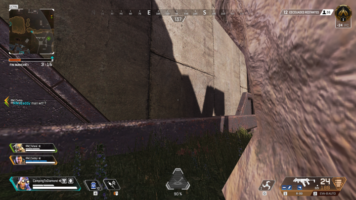
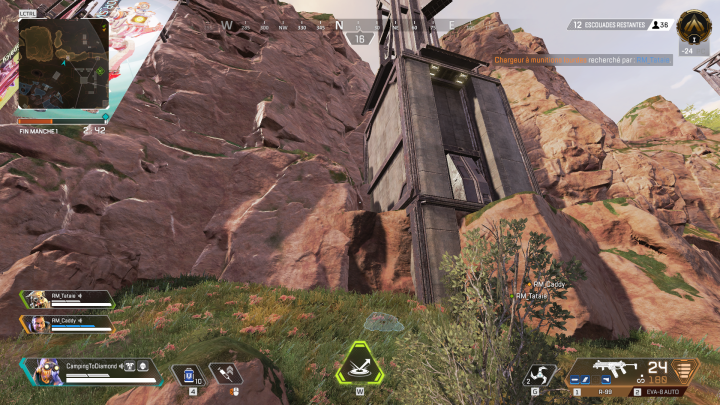

This spot is very high so people cannot notice your team from the ground. However, the Cage is usually very contested and you will be visible from very far when you access that hidding spot. Make sure to all hide quickly at the same time to reduce the likelyhood that another team noticed you.
To access this spot, you can use an Octane. Roughly place a Launch Pad where indicated in the screenshot below and super jump: press your jump key right after you hit the Launch Pad and be ready to air control and climb when you hit the cliff. Once you are there, you can lock yourself in the crouched position. Try to have all your team members at the same place so you are less likely to be noticed.
You can also climb: to do so, you have to access the banners structure. You can start climbing on the East and move to the West as you go up. Once you are on the edge of the banners structure, run and turn right while in the air. You should be able to air control your way to the edge of the hidding spot.